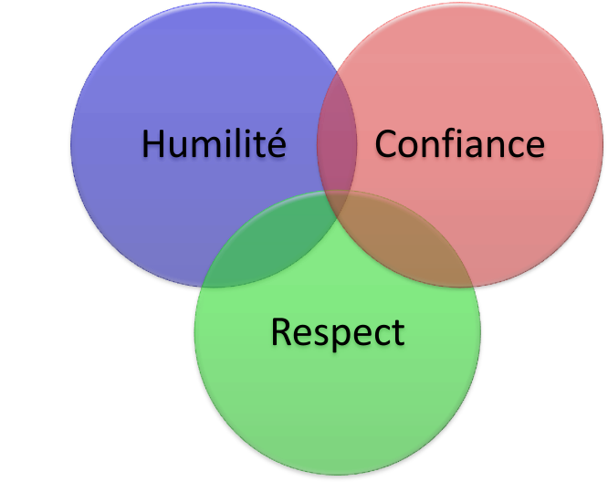
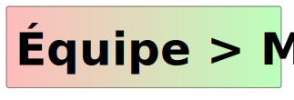

Le développement de logiciels se fait souvent en équipe. Cependant, il y a des défis pour travailler en équipe. Souvent, avant l’université on apprend comment s’organiser en équipe, faire des rencontres, répartir le travail, planifier, etc. Pourtant, il y a d’autres défis dans ce travail, des défis sur le plan humain. C’est le sujet du livre « Team Geek » (2012) écrit par Brian W. Fitzpatrick (anciennement de Google) et Ben Collins-Sussman (Subversion, Google).
Aujourd’hui, la demande pour le talent en technologies de l’information est importante. Les technologies évoluent constamment et le temps que vous investissez pour maîtriser une technologie est important. Pourtant, il y a des risques avec certains investissements de temps à long terme. Par exemple, qui développe du code encore pour Flash ? Cette technologie est maintenant désuète et ça ne sert à rien de mentionner cette compétence sur un CV.
La bonne nouvelle est qu’une « technologie » ne changera jamais : le comportement humain. Donc, il est toujours rentable d’investir du temps pour mieux maîtriser cet aspect du développement. Les entreprises en technologies de l’information sont toujours à la recherche de développeurs qui ont également des compétences générales (« soft skills »).
Les auteurs de « Team Geek » abordent les problèmes dus aux tendances comportementales chez les développeurs. Par exemple, une personne n’a pas toujours envie de montrer son code source à ses coéquipiers pour plusieurs raisons :
- Son code n’est pas fini.
- Elle a peur d’être jugée.
- Elle a peur que quelqu’un vole son idée.
Dans tous ces cas, il s’agit de l’insécurité et c’est tout à fait normal. Par contre, ce genre de comportement augmente certains risques dans le développement :
- de faire des erreurs dans la conception initiale ;
- de « réinventer la roue » ;
- de terminer le travail plus tard que son compétiteur, qui, lui, a collaboré avec son équipe.
Les auteurs le disent et c’est un fait : si nous sommes tous plus ou moins compétents sur le plan technique, ce qui fera la différence importante dans une carrière est notre habileté à collaborer avec les autres.

12.1 Humilité, Respect, Confiance
L’humilité, le respect et la confiance (voir la figure 12.1) sont les qualités de base pour le bon travail en équipe. Cette section présente ces aspects en détail.
12.1.1 Humilité
Voici la définition d’humilité selon Antidote :
Une personne humble pense ainsi :
- Je ne suis pas le centre de l’univers.
- Je ne suis ni omniscient ni infaillible.
- Je suis ouvert à m’améliorer.
L’humilité ne veut pas dire « je n’ai pas de valeur » ou « j’accepte d’être mal traité.e par les autres ». Voir la section Proposer des solutions si besoin.

Quelques exemples concrets d’humilité dans le développement :
- Un coéquipier débutant en JavaScript, git, etc. va le reconnaître et va même faire des exercices sur Internet pour s’améliorer.
- Un coéquipier (même le chef d’équipe) qui a pris une mauvaise décision (technique ou autre) va l’avouer. Il sait que les autres ne sont pas là pour l’attaquer (ils le respectent).
- Un coéquipier va travailler fort pour que son équipe réussisse.
- Un coéquipier qui reçoit une critique ne va pas la prendre personnellement. Il sait que la qualité de son code n’équivaut pas à son estime de soi. (Cela n’est pas toujours facile!)
12.1.2 Respect
Une personne démontrant du respect pense ainsi :
- Je me soucie des gens avec qui je travaille.
- Je les traite comme des êtres humains.
- J’ai de l’estime pour leurs capacités et leurs réalisations.
12.1.3 Confiance
Une personne démontrant la confiance pense ainsi :
- Je crois que les autres coéquipiers sont compétents et qu’ils feront la bonne chose.
- Je suis à l’aise lorsqu’ils prennent le volant, le cas échéant.
Le dernier point peut être extrêmement difficile si vous avez déjà été déçu par une personne incompétente à qui vous avez délégué une tâche.
12.2 Redondance des compétences dans l’équipe (Bus Factor)
Pour qu’une équipe soit robuste, il faut une redondance des compétences. Sinon, la perte d’un coéquipier (pour une raison quelconque) peut engendrer de graves conséquences, voire arrêter carrément le développement. Ce principe a été nommé en anglais Bus factor. C’est le nombre minimum de coéquipiers à perdre (heurtés par un bus) pour arrêter le projet par manque de personnel bien informé ou compétent. Par exemple, dans un projet de stage, si c’est vous qui écrivez tout le code, alors c’est un bus factor de 1. Si vous n’êtes plus présent, le projet s’arrête.

Un coéquipier peut être absent (ou moins disponible) pour des raisons moins graves, par exemple, il part en vacances, il tombe malade, il prend un congé parental, il change d’emploi, ou il abandonne le cours. Cherchez à répartir les responsabilités dans l’équipe afin d’avoir un bus factor d’au moins 2. Partagez des compétences pour maintenir une équipe robuste. Vous pouvez également garder votre solution simple et garder la documentation de votre conception à jour.
Si un coéquipier quitte en cours du trimestre, il n’est pas facile de maintenir le même rythme. Cependant, les enseignantes ou les enseignants et les auxiliaires de laboratoire s’attendront à ce que vous ayez pensé à un « plan B » avant de perdre le coéquipier. Au moins un autre coéquipier doit être au courant de ce que faisait l’ancien coéquipier, pour que le projet ne soit pas complètement arrêté.
12.3 Mentorat
Ça peut être l’enseignant qui décide la composition des équipes. Ça veut dire que forcément certains coéquipiers ont plus d’expérience et de facilité à faire certaines tâches que d’autres. Les équipes doivent composer avec cette diversité. C’est une approche pédagogique reconnue par les experts.
Selon TeamGeek :
Si les plus forts n’aident pas les autres, ils risquent de les éloigner de l’équipe et de se trouver seuls sur le plan des contributions techniques. Voir la section sur la Redondance des compétences dans l’équipe (Bus Factor).
Encadrer un coéquipier au début du trimestre peut prendre beaucoup de temps. Mais, si la personne devient plus autonome, c’est un gain pour toute l’équipe. Cela augmente également le bus factor.
Voici quelques conseils pour le mentorat :
- avoir les compétences sur un plan technique ;
- être capable d’expliquer des choses à quelqu’un d’autre ;
- savoir combien d’aide à donner à la personne encadrée.
Selon TeamGeek, le dernier point est important parce que si vous donnez trop d’informations, la personne peut vous ignorer plutôt que vous dire gentiment qu’elle a compris.

12.4 Scénarios
Considérez les volets HRC lorsque vous vous trouvez dans une des situations suivantes :
- un coéquipier se trouve à être le seul à faire de la programmation.
- il ne fait plus confiance à ses coéquipiers, car leur code est trop bogué.
- il n’a pas la patience pour accommoder les coéquipiers moins expérimentés.
- il croit que les autres auraient dû apprendre mieux à programmer dans les cours préalables.
- un coéquipier dit qu’il a « fait ses 3 heures de contribution » chaque dimanche chez lui et que ça devrait suffire pour sa partie (il a un emploi et n’a pas beaucoup de temps disponible pour l’équipe d’un laboratoire).
- un ou deux membres d’une équipe abandonnent le cours après les évaluation de mi-trimestre, par crainte d’échec.
- un coéquipier suit cinq (!) cours en même temps et n’a pas le temps adéquat pour travailler correctement dans les laboratoires de cette matière.
- plusieurs coéquipiers sont « expérimentés » mais ils ont de la difficulté à s’entendre sur la direction du projet.
- l’équipe n’est pas cohésive ; chacun fait avancer sa partie, mais le code ne fonctionne pas ensemble.
Vous devez en parler avec votre équipe. Si la situation ne s’améliore pas, vous devez en parler avec les chargés de laboratoire et l’enseignant.
Pour mieux évaluer le travail de chacun dans l’équipe au laboratoire, il y a des conseils dans la section Évaluer les contributions des membres de l’équipe.